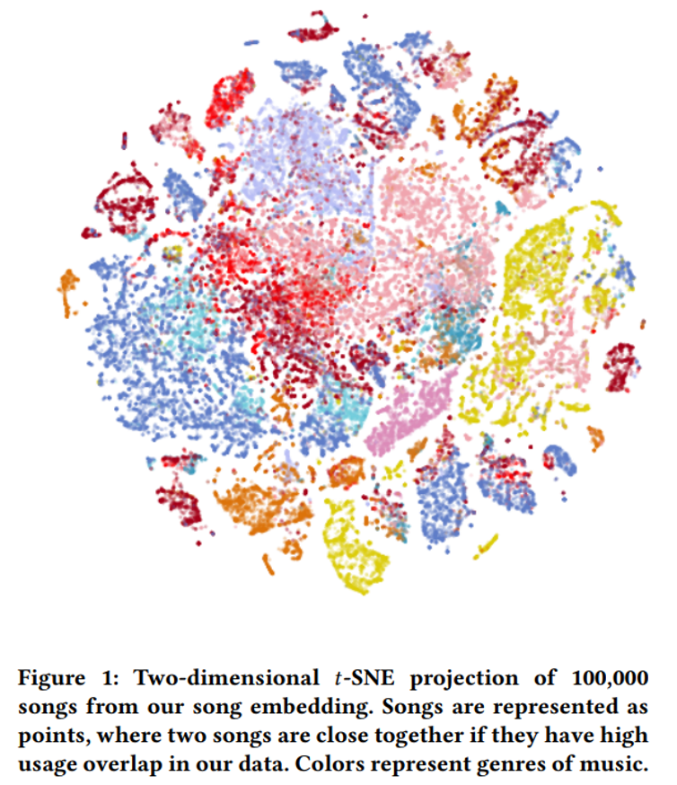
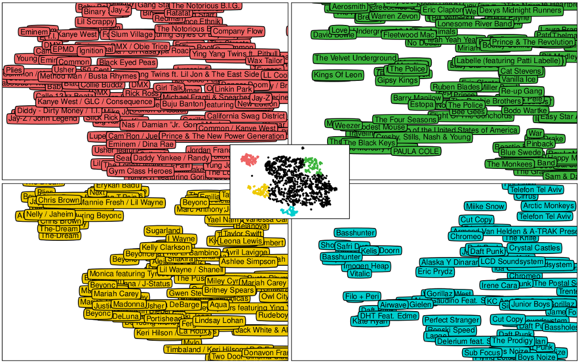
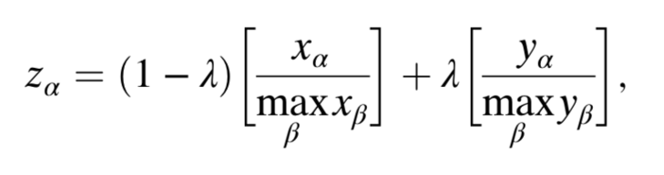
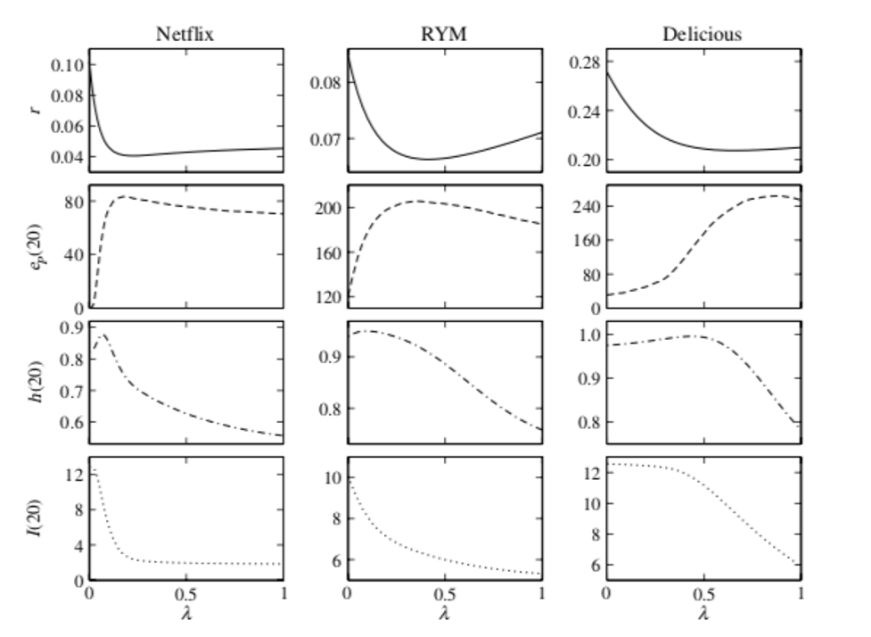
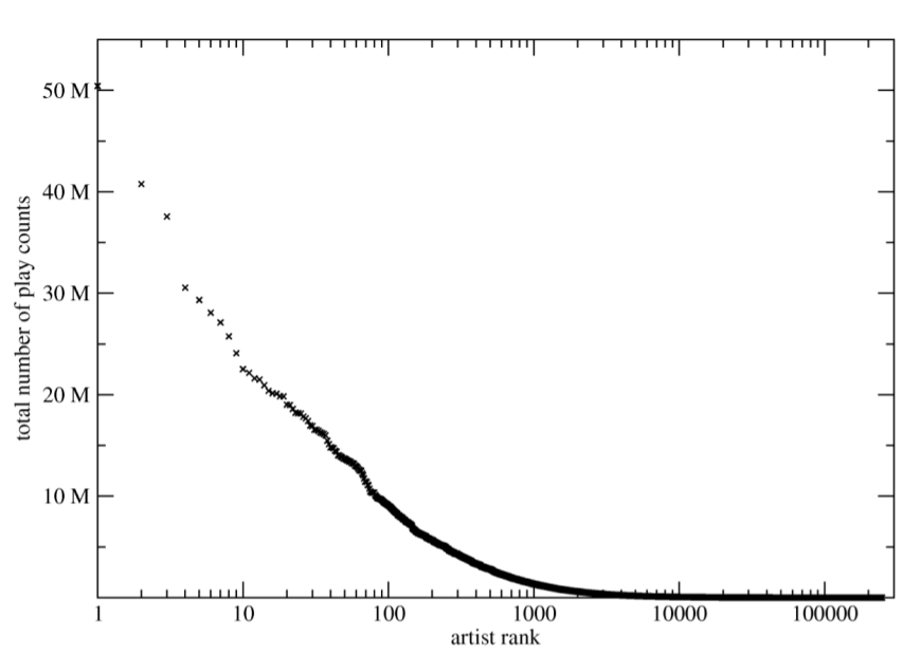

Becky
Zhang
Assessing the diversity-accuracy dilemma of Spotify’s recommendation systems
1. INTRODUCTION
Much of our consumption of music today is dictated by the algorithms and models behind streaming services. The architecture of these models, whose recommendations are impacted by their user data and strategic aims, holds real-life implications on which music ends up being played. To investigate these effects, we need to understand the models used by Spotify, the kinds of data they collect, and how they use it to inform their recommendations.
Accuracy and diversity are key metrics for assessing the success of recommendation algorithms. The way these measures are defined, in turn, impacts the way the algorithms are designed. With accuracy and diversity framed as being mutually exclusive, Spotify has researched how to balance this tradeoff with business goals in mind: how might we offer listeners songs that they like (accuracy), while also anticipating what they might come to like through serendipity (diversity)?
In this paper, we explore how different algorithms impact accuracy and diversity. We then address studies on user reactions to differences in the diversity of their recommended content. Our aim is to unpack how Spotify generates music recommendations; identify key blind spots and biases in their models; and assess the broader ethical implications of these designs, proposing solutions where possible. While placing our analysis of existing papers in an ethical and “practical” context and anchoring it to key deep learning concepts, we also touch upon broader psychological and philosophical questions.
We hope to contribute to existing research that attempts to both define and address the tensions between accuracy and diversity that stem from recommendation systems. While we target Spotify’s recommendations more specifically in order to hone in on one set of models, we also contextualize our ideas and reflections among the broader usage of recommendations and predictive analytics, from TV streaming services to social media feeds to search engines.
2. METHODS
Since our project is ethics-based rather than applications-based, much of the research process will involve reading academic papers about deep learning and recommendations. Thus, the tools we’ll be using most concern how to extract important information from papers and how to find relevant sources. For the latter, we’ve used databases like jstor and Google Scholar as well as the Works Cited section of papers we find particularly useful. For the former, we are practicing synthesizing information and identifying the most helpful information (e.g. reading the first sentence of each paragraph first) for papers on sometimes more advanced technical concepts. We’ll also be using concepts like CNNs and RNNs from class and Professor Clark’s help to aid our understanding of these research articles.
3. DISCUSSION
Introducing Accuracy
The success of recommendation algorithms can be measured by different metrics. One important metric is the “accuracy” of the algorithm. Generally speaking, accuracy relates to how well the algorithm models the taste of the user so as to recommend items that the user enjoys. Specifically, different definitions of accuracy can be used. Two widely-used definitions are top-N recall and the average Rank score. In both cases, a recommendation algorithm produces a list of items ranked by its predicted user preference.
Top-N recall takes the top N elements of a ranked list of recommended items and looks at how many items are also included in a test set of the user. The more items from the test set that appear in the recommended list, the higher the accuracy of the algorithm. Rank sums the percentage rank given by the algorithm to all items in the test set, weighted by the user’s preference for the item (a real number or a 0-1 value for not-preferred/prefered) (Zhang et al.). Although accuracy is a factor in user satisfaction of the recommendations (Swearingen et al.), there is work that advocates using diversity as a metric alongside accuracy. One reason for this is the concern that accurate recommendations may be less interesting to a user if they are consistently given songs that they already know, even if they enjoy them. This concern is based partly on the company’s perspective of wanting to have desirable services to keep people using the platform. From the user’s and artist’s perspectives, excessive personalization may restrict the musical growth of the listener while also limiting the success of lesser known artists.
Introducing Diversity
In general, diversity represents the variety of content in a list of recommendations. Two different ways of measuring diversity are intra-list similarity and generalist-specialist score (GS-score). Intra-list similarity sums the pairwise similarity between all songs in a list of recommendations. Similarity between a pair of songs is calculated based on the number of users who like both songs in the pair (Zhang et al.). Under this definition, diversity is independent from the content of the song. GS-score attempts to take into account a notion of similarity between aspects of the content itself. It first creates an embedding space using word2vec, where Spotify playlists are treated as "documents'' and songs within playlists are treated as "terms" in the documents. The assumption in this model is that playlists are often thematically coherent so that songs within playlists have some degree of similarity with each other. A user's center of mass is the centroid of vectors in the embedding space of the songs they have listened to, weighted by the number of times they listened to each song. GS-score is then the sum over all songs in the user's list of the cosine similarity between the song vector and the user's center of mass, again weighted by number of listens (Anderson et al.). This definition of GS-score is different to intra-list similarity since GS-score is a measure of consumption diversity rather than recommendation diversity, but the idea of GS-score can easily be applied to lists of recommended items instead of lists of user's songs.

The Diversity-Accuracy Tradeoff
Diversity and accuracy are often portrayed as mutually exclusive. Higher diversity means being willing to recommend content to users that they may dislike. One study evaluated algorithms designed to produce diverse recommendations on a Last.fm user dataset. They measured Rank and intra-list similarity for different levels of influence of diversity in the algorithm. They found as Rank increased, intra-list similarity decreased, demonstrating a tradeoff between these two metrics in their algorithm (Zhang et al.). Given a tradeoff between diversity and accuracy, how should these metrics be balanced in a music recommendation system? We can think about this question from the perspective of listeners, artists, and music streaming companies. Before we discuss the implications of the diversity-accuracy tradeoff, let’s look at how existing algorithms attempt to balance diversity and accuracy.
Rank (accuracy) and intra-list similarity (diversity) for varying degrees of diversity in the algorithm, depicted in a tradeoff.
Evaluating the Diversity and Accuracy of Known Spotify Models
The three primary methods Spotify uses in its recommendation system are collaborative filtering, natural language processing (NLP), and content-based models (Dieleman). Collaborative filtering is content-agnostic, meaning that it doesn’t look at information related to the music other than the consumption patterns associated with it, specifically through matrices indicating user-content interactivity (Dieleman). NLP conversely uses song titles, artists, and other textual evidence such as summaries, reviews, and tags to inform its recommendations. Content-based models, typically convolutional neural networks (CNNs) in this case, use the audio signal of the music to create models to recognize certain patterns in the audio itself.
A major challenge facing recommendation algorithms implemented by the first two approaches is a positive feedback loop wherein existing user data for certain songs/artists drive users toward the very same content—thus generating more data which does the same, and so on. The lack of data for newer or less popular or mainstream music is called a “cold start problem,” rendering these artists and genres disproportionately under-recommended by collaborative filtering or NLP models. One solution to this is to ramp up the use of CNNs as a counterbalance to NLP and collaborative filtering, and sharpening their capabilities to identify outliers and edge cases.
Though most commonly used for image processing, CNNs are a similarly promising means to classify audio, in this case inputted as song fragments in Mel-spectrogram form. Mel spectrograms are a transformed representation of raw audio that details the frequency composition of a signal over time (Zhang et al.), so that its form is akin to an image signal, which CNNs are most receptive to. Spotify uses CNNs to predict musical features such as mood, genre, key, and instruments by using the predictive accuracy of kernels and convolutional layers followed by fully connected layers to identify increasingly detailed features of an input. At Spotify, this looks like one-dimensional convolutions (in the time dimension) and max-pooling operations between convolutional layers, as well as a final global temporal pooling layer which feeds into fully connected layers. The CNN predictions ultimately contribute to a latent space for songs to cluster based on their designated type, as seen below.

Close-ups of a t-SNE visualization of latent space, attained via collaborative filtering.
Auralist: Introducing Diversity Through Serendipity
Auralist uses three different techniques for generating recommendations: artist-based LDA, listener diversity, and declustering.
Artist-based LDA is a natural language processing based model that considers users as documents and preferred artists as words, generating topic vectors for each artist. These topics represent communities of users clustered together with similar preferences. The similarity metric is then defined as the cosine similarity between artist topics. Recommendations can be generated based on ranking the similarity between a potentially recommended item and all items in the users listening history.
Listener diversity and declustering aim to increase the diversity of recommendations based on artist-based LDA. Listener diversity prioritizes recommending artists that have more diverse listener communities, which can be determined from the topic vector of the artist. The topic vector of an artist is a probability distribution that sums to 1, meaning the entropy of the distribution can give a measure of its irregularity. A more widely distributed artist vector will have greater negative entropy. One pattern in listener diversity is biases for more popular artists, since they are more likely to have wider appeal. Listener diversity can be offset based on the artist’s number of unique listeners to account for this bias.
Declustering is a graph based approach that defines nodes as artists and edges between artists with weights being their LDA similarity. A user’s local preference graph is the subset of the graph that only contains items in the user’s preference history. Declustering is an algorithm that attempts to find nodes on the edge of clusters in the local preference graph of a user while avoiding concentration of previous activity.
Listener diversity focuses on giving recommendations that are diverse on a community level, taking into account the diversity of user communities for each artist. On the other hand, declustering focuses on giving recommendations that are diverse on a user level, taking into account the diversity of the user’s personal listening history.
HeatS + ProbS: Striking a Balance Through Hybridization
Like Auralist, a hybrid diffusive algorithm, proposed in 2010 by a group of international researchers, has a greater aim. Instead of combating merely bias in recommendations, the algorithm targets the broader diversity-accuracy dilemma, wherein models are typically designed to unite similar objects with similar users, with little intention to diversify a user’s recommended content. But as these researchers argue, “real value is found in the ability to suggest objects users would not readily discover for themselves [...] in the novelty and diversity of recommendation” (Zhou et al.). Working within the framework that diversity and accuracy exist in tension they designed a hybrid algorithm, with balanced targets toward both goals.
The two components of this hybrid algorithm are heat-spreading (HeatS) and probabilistic spreading (ProbS), which seek to solve the diversity and accuracy dilemmas respectively. HeatS is derived from a ProbS, which redistributes resources via a random-walk (stepping) procedure. In HeatS, each object is similarly given an initial level of “resource.” This is then redistributed so that each user gets an amount of resource equal to the average amount of its nearest neighboring users. Heat-spreading follows a simple formula for combining algorithms via a weighted linear aggregation. Thus, while highly linked objects are favored in ProbS, less densely connected objects are recommended by HeatS.
For methods X and Y reporting scores xa and ya, the hybrid score for an object a is defined below.

λ, which is either a 0 or 1 value, can thus be adjusted to weight one method over the other.
Then, aiming to optimize output values r (minimizing this) and ep (maximizing this) to increase accuracy, and optimizing H and I for diversity, the λ parameter can be adjusted between the 0 and 1 values in order to reach an optimum point for both diversity and accuracy measures. Using three datasets, they found the following parameter-based performances.

Performance of HeatS + ProbS on Netflix, RateYourMusic, and Delicious music datasets.
While Auralist and HeatS + ProbS mitigate the tradeoff between diversity and accuracy by aiming to maximize both at the same time where possible, they have their limitations. Both Auralist and the HeatS + ProbS algorithm are not content-based, aiming to address diversity problems by counteracting the goals of similarity/accuracy in existing user-object frameworks. Without including content-based solutions, these models may remain limited in terms of proposing music recommendations without really looking at the content of the music itself, as opposed to songs defined by their relation to their listeners.
The researchers behind HeatS and ProbS also suggested that hybrid parameter tuning could be deployed at the individual level as well, as opposed to the global perspective they used. This could be executed either directly by the platform or per the user’s own choice; this is where the importance of these models’ user interfaces comes in.
Recommending Content through User-Centered Interfaces
There are two primary issues concerning the UI/UX of recommendations on streaming services (and beyond). The first is transparency: how clear is it to the user that certain content—feeds, playlists, search results, etc.—has been manicured by predictive models? The second, perhaps more nuanced, is personalization: should users be the ones to decide how customized their content is, or should services keep users’ experiences uniform across the board, be them standard or recommendation-filtered content?
The first question, which encompasses both transparency and understandability, is critical to the broader problem of software guiding users toward habits (and needs) without their former awareness or approval. For instance, when Google began personalizing results back in 2009, there was insufficient warning to platform users. As a result, people automatically bought into the practice; many grew dependent upon it, now wedged in the depths of its echo-chamber effect more than a decade later. There is an option to limit personalization, but this is hardly advertised (Magid).
Features like the “For You” section on Spotify, including Discover Weekly, which provides a weekly slate of fresh music to users according to their interests, do suggest quite evidently that they are customized (as opposed to, say, the “Billboard Hot 100” playlist). But when one’s Spotify homepage consists solely of “Recently played,” “Jump back in,” and links to music “More like” the artists you’ve been playing on repeat, there is no easy option for discovery or standardized content. The algorithm is embedded into the home base of the application, both subtly and inevitably. Personalization, then, becomes a given.
This also becomes an issue in the case of user experience and retention. Some case studies cite the disadvantages of disproportionate algorithmic-based, as opposed to user-based, listening (Anderson et al.). However, Spotify’s far surpassing of competitors like Pandora, iTunes, and even Apple Music has owed largely to their aggressive investment in deep learning, from prioritizing personalized content years before recommendations became ubiquitous to acquiring the deep-learning companies Echo Nest, Sonalytic, and Niland in recent years (AP).
More importantly, the actual mechanisms behind this customization are kept hidden; this is where open-source software prevails as a more transparent and ethical alternative, as well as one that will increase eroding trust between the user and the developer. Aside from this more direct solution, UI-based workarounds include more explicitly visualizing the relation between recommended content and its musical attributes, allowing the user to better understand why certain tracks are suggested to them based on the actual content.
Considering the second question, on personalization, one must distinguish between reactive versus proactive initiation (Murphy-Hill et al.). The former involves users opting into a recommender system when they want to, while the latter involves a de facto recommendation, or a recommendation given without a user’s prompt. In Auralist’s design, multiple options specialize in different types of recommendations, from one promoting artists with broader audiences to one that aims to specifically counteract one’s “music bubble” (Zhang et al.). These different goals could then be implemented based on user preference, if a platform decided to offer users that choice. Alternatively, a streaming service might assess which of Auralist’s four models best suits their business aims, and only select one to implement for all their users.
While the first option, to open up choices to users, might seem to give users more autonomy, the types of options offered by a platform remains at the company’s discretion. Furthermore, given a low likelihood for transparency behind each model, this might still result in users opting into recommendation styles that do not fulfill their best interests, or simply complicate the platform and lower the overall accessibility of the user experience. The latter, meanwhile, seems to be the more widely adopted case, though it has still failed to satisfy many users’ wishes, and certainly, when weighted more heavily in recommendations-based listening, fails to sufficiently address the diversity-accuracy dilemma and lowers user autonomy. This depends further on what is called “tech-savviness,” that is, a user’s ability to adjust to and gain from more multifaceted interfaces.
Algorithmic Implications for Listeners, Artists, and Streaming Companies
Auralist was evaluated with user studies to understand how diversity in recommendation algorithms is perceived by listeners (Zhang et al.). Participants selected artists to represent their music taste and were given a list of 20 recommendations generated by two versions of the algorithm, one with less diversity and one with more. The number of useful recommendations and serendipitous recommendations was greater in the algorithm that prioritized diversity, whereas the enjoyment rating was slightly higher for the algorithm that didn’t. Unsurprisingly, the number of known songs was greater for the less diverse algorithm. Comments by the participants varied, with some expressing satisfaction at discovering new songs and artists, while others preferred the congenial recommendations of the less diverse algorithm. The study was limited to only 21 participants between the ages of 18 and 27, so the results are not representative. One takeaway is that responses to diversity in recommendations vary between people. Not everyone has the same response to hearing new music, and the various kinds of ‘new’ music are hard to quantify. A response to this mentioned in some papers is to have algorithms tuned for diversity differently for each user (Zhou et al.). People also may use recommendation algorithms for different purposes. The Spotify paper (Anderson et al.) suggests that algorithmic recommendations, though less diverse than organic listening, may be used by users for precisely this reason. What may be important for listeners is transparency in the recommendation process so that they can engage with recommendations in a way that fulfills their listening needs.
The distribution of popularity for music artists, meanwhile, follows a Long Tail model, where a few top artists have the largest share of popularity, with the vast majority having only niche audiences. A study on how recommendation algorithms behave regarding item popularity, defined as number of plays, found that collaborative filtering models tend to bias for recommending more popular music more often (Celma et al.). The models discussed so far rely on a mix of collaborative filtering and natural language processing, meaning they are prone to this bias. Diversity is important in this respect to ensure that lesser known artists are included in the recommendation system. The study found that content based recommendations did not have this bias for popularity, though had the disadvantage of not being able to easily distinguish music of higher or lower quality (in terms of user’s perceived quality). Inclusion of diversity as well as content based recommendations favors the majority of artists, since their work would be more likely to be discovered through recommendations.

Play counts for artists by their popularity ranking. Top artists have a large share of total play counts.
Spotify is concerned with how diversity in recommendation algorithms can affect short and long term goals. In the short term, the corporation wants to increase the number of songs streamed (increasing ad revenue for free users). In the long term, Spotify wants to increase user retention and conversion. Retention measures whether users are remaining on the platform, and can be quantified by churn rate. Conversion measures how likely someone is going to convert to being a paid subscriber after trying the free version of the platform. A study done by Spotify measured the GS-score for users to see how this metric correlated with user retention and conversion (Anderson et al.). They found that conversion and retention are both associated with greater diversity of listening. The same study also found that algorithmic consumption of music was less diverse than organic consumption, where a user is listening without algorithmic recommendations. They speculate that recommendation algorithms may therefore be counterproductive to the platform in the long-term, even though they satisfy the short-term needs of users. The study presents the possibility that diversity in recommendation algorithms may be necessary for retaining users on the platform and getting new users to join, even though they also found that accuracy in recommendation algorithms increased the number of songs streamed in the short term. They conclude that there is a need to balance accuracy and diversity to balance short and long term goals, which Auralist and HeatS seem well adapted to do.
A. REFLECTION
Next time, we could dive deeper into the papers that we found since there were many useful ones. We could also conduct a deeper assessment of NLP and collaborative filtering algorithms and the different effects of the two. Given more time or if we had started a little earlier, we could include another subsection or two including additional models that try to solve the diversity-accuracy dilemma to compare to Auralist and HeatS + ProbS.
We could continue our work by trying to write our own deep learning models, for instance experimenting with hybridizing algorithms for recommending music to people or working on audio-input CNNs to predict musical content/features. We could also further attempt to get more recent information about Spotify’s recommendation algorithms, since most of what we based our understanding of their models was on articles from a couple years ago, and their systems have likely changed and improved since then. Perhaps this could be done by digging deeper into academic/research databases or seeking any connections with current engineers at Spotify.
WORKS CITED
- A. Anderson, L. Maystre, I. Anderson, R. Mehrotra, and M. Lalmas, “Algorithmic effects on the diversity of consumption on spotify,” inWWW’20: Proceedings of The Web Conference 2020, April 2020, p. 2155–2165.
- AP. (2018, November) Spotify + the machine:Using machine learning to create value and competitive advantage. [Online]. Available: https://digital.hbs.edu/platform-rctom/submission/spotify-the-machine-using-machine-learning-to-create-value-and-competitive-advantage/
- S. Dieleman.(2014, August) Recommending Music On Spotify With Deep Learning.[Online]. Available: https://benanne.github.io/2014/08/05/spotify-cnns.html
- L. Magid.(2009, January) How (and why) to turn off google's personalized search results. [Online]. Available: https://www.forbes.com/sites/larrymagid/2012/01/13/how-and-why-to-turn-off-googles-personalized-search-results/?sh=6bd8a13938f2
- M. Millecamp, N. N. Htun, Y. Jin, and K. Verbert, “Controlling spotify recommendations: Effects of personal characteristics on music recommender user interfaces,” in UMAP ’18: Proceedings of the 26th Conference on UserModeling, Adaptation and Personalization, July 2018, pp. 101–109.
- E. Murphy-Hill and G. C. Murphy, “Recommendation delivery - getting the user interface just right.” January 2014.
- S. Sinha, K. Medhurst, and R. Sinha, “Beyond algorithms: An hci perspective on recommender systems,” September 2001.
- B. Zhang, J. Leitner, and S. Thornton, “Audio recognition using mel spectrograms and convolution neural networks.”
- Y. C. Zhang, D. S ́eaghdha, D. Quercia, and T. Jambor, “Auralist: Introducing serendipity into music recommendation,” in WSDM ’12: Proceedings of the fifth ACM international conference on Web search and data mining, February 2012, pp. 13–22.
- T. Zhou, Z. Kuscsik, J. G. Liu, M. Medo, and J. R. W. Y. C. Zhang,“Solving the apparent diversity-accuracy dilemma of recommendation systems,” in Proceedings of the National Academy of Sciences of the United States of America, January 2010, pp. 1–8.
- Oscar Celma and P. Cano, “From hits to niches?: or how popular artists canbias music recommendation and discovery,” in NETFLIX ’08: Proceedings of the 2nd KDD Workshop on Large-Scale Recommender Systems and the Netflix Prize Competition, August 2008, pp. 1–8.